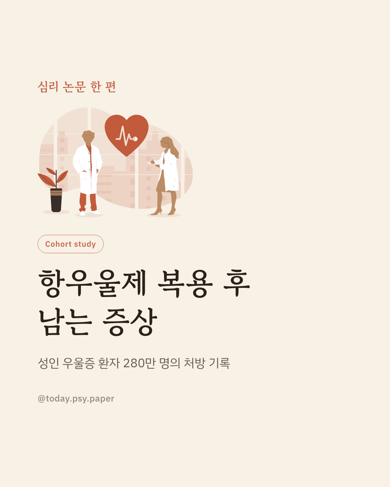
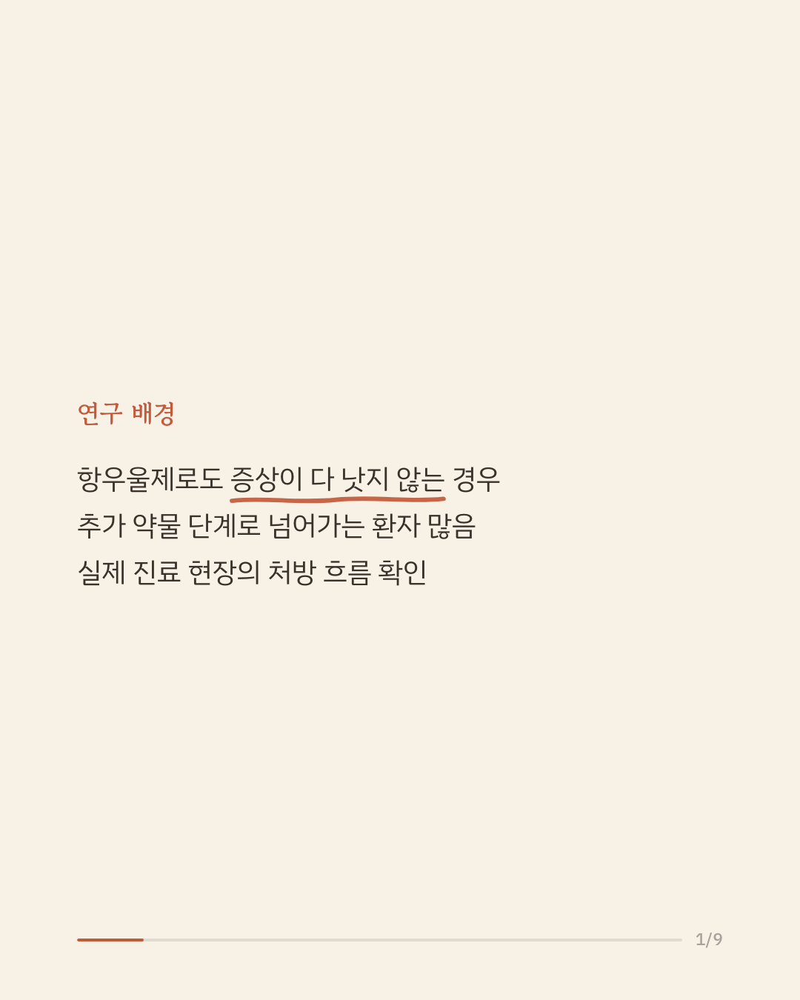
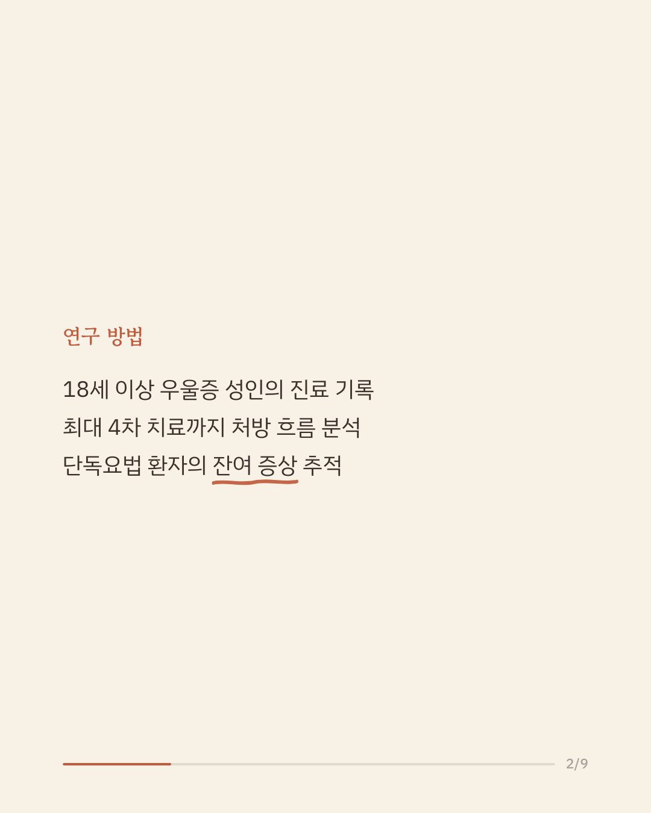
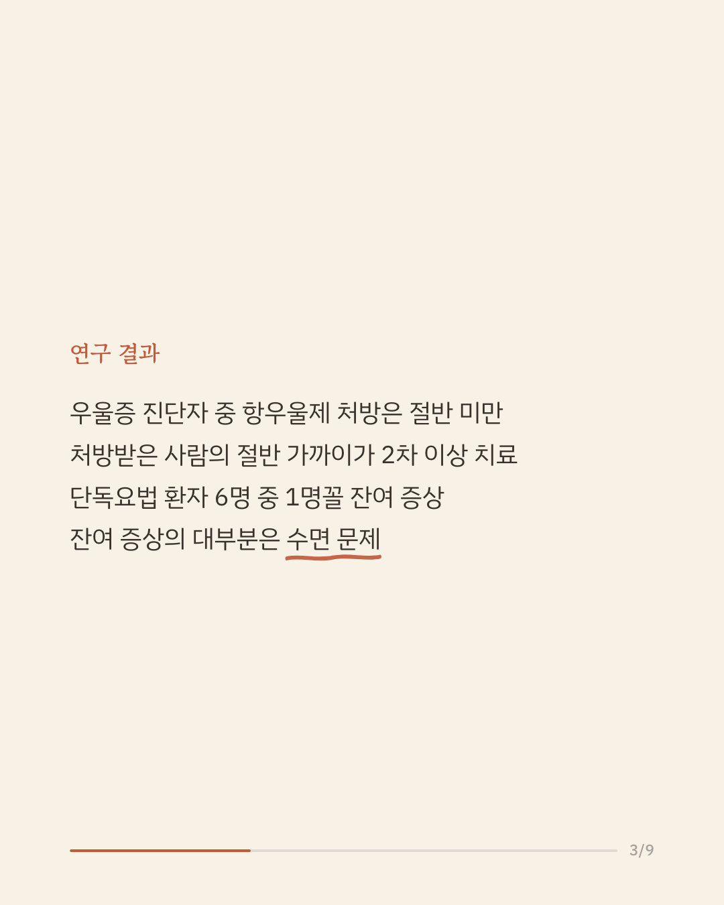
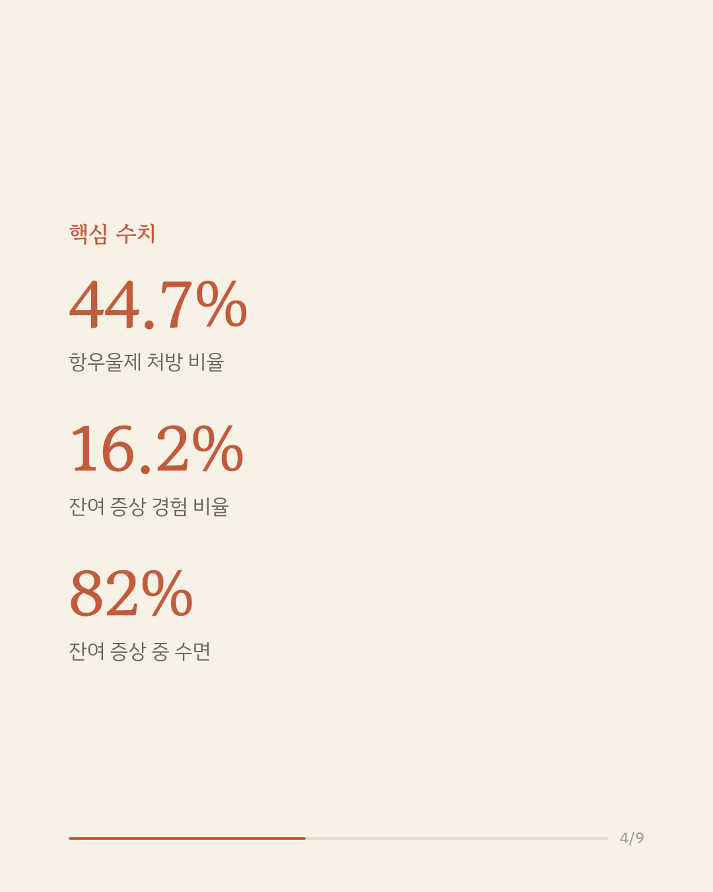
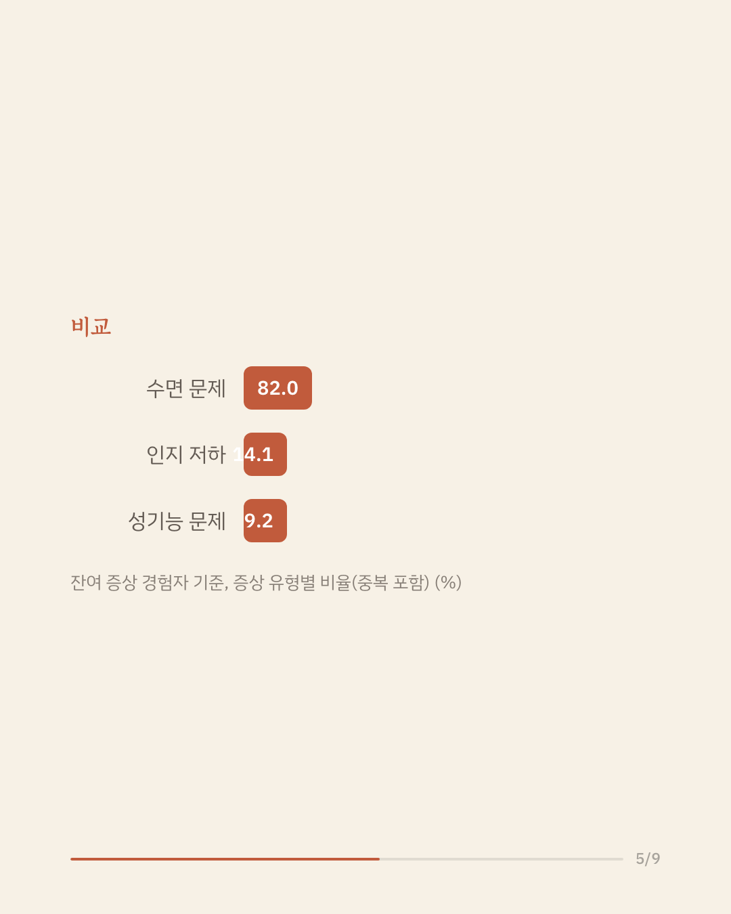
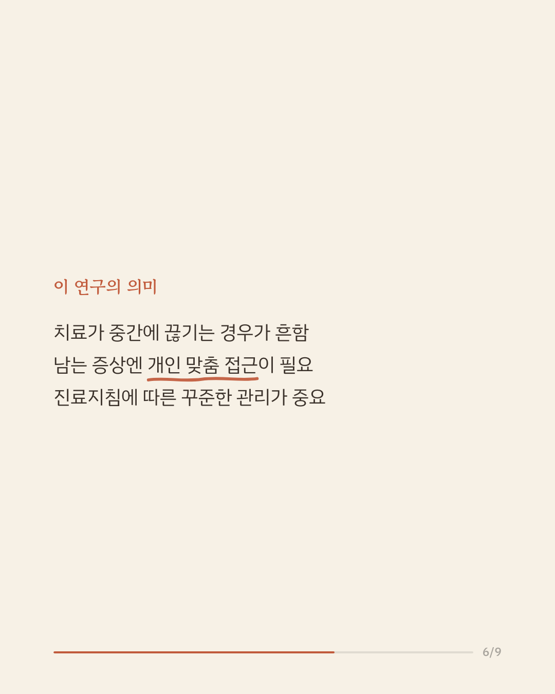
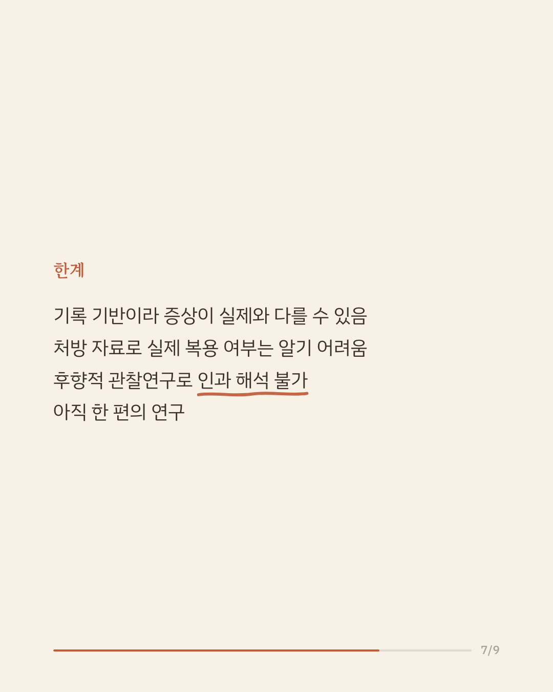
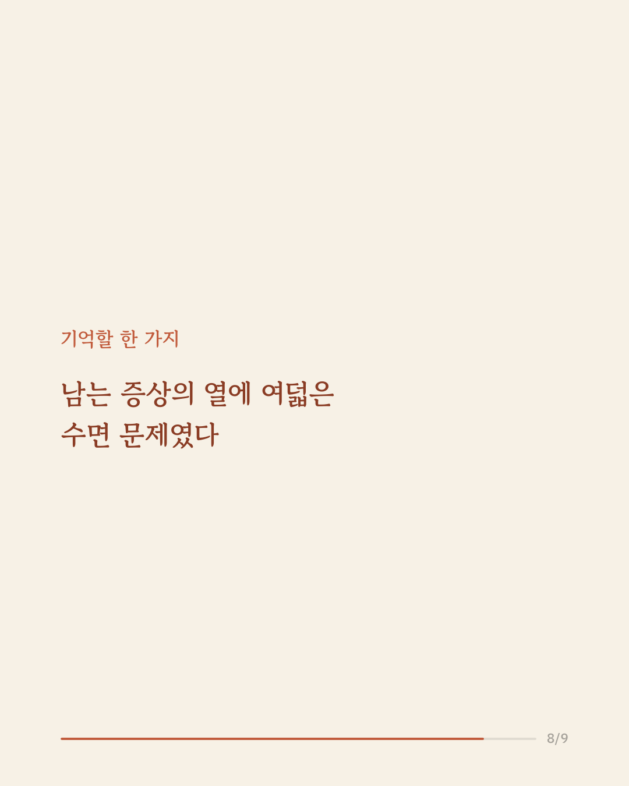
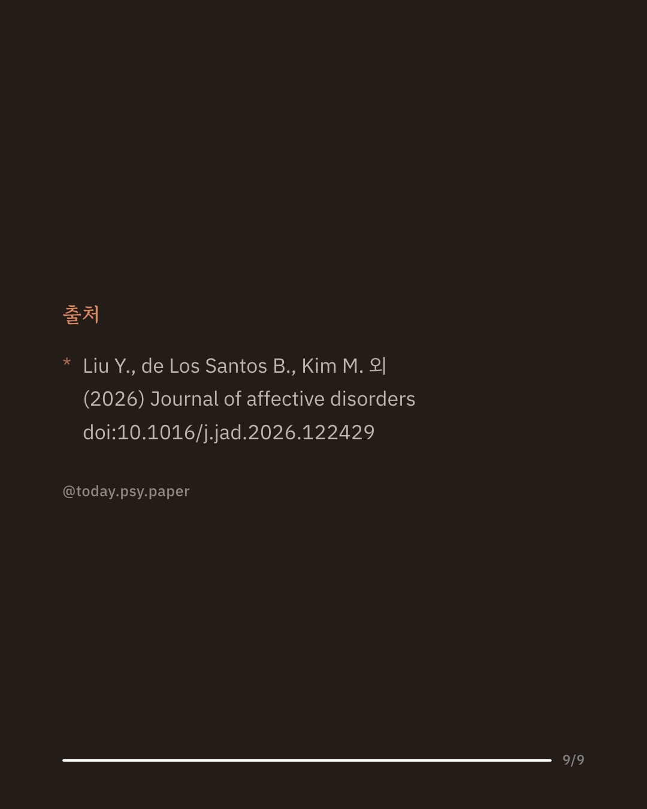

우울증 치료에 항우울제가 널리 쓰이지만, 약을 먹어도 증상이 충분히 나아지지 않는 환자가 적지 않습니다. 그래서 여러 단계의 약물 치료가 이어지는 경우가 많습니다. 이 연구는 미국의 대규모 보험청구·의무기록 자료로 성인 우울증 환자 630만여 명의 실제 치료 패턴과 남는 증상을 살펴봤습니다. 우울증으로 진단받은 사람 중 항우울제 처방이 확인된 경우는 44.7%였고, 처방받은 사람의 47.4%는 2차 이상의 약물 치료로 넘어갔습니다. 단독요법을 받은 환자의 16.2%가 하나 이상의 잔여 증상을 겪었으며, 그중 82%가 수면 문제였습니다(인지 저하 14.1%, 성기능 문제 9.2%). 이 결과는 약물 치료가 끝까지 이어지지 않는 경우가 많고, 약을 써도 남는 증상에는 개인에 맞춘 접근이 필요함을 시사합니다. 다만 보험청구·기록에 기반한 후향적 관찰연구여서 실제 복용 여부나 증상의 정도를 정확히 알기 어렵고 인과는 말할 수 없습니다. 단일 연구이므로 확대 해석은 조심해야 합니다. 출처: Journal of Affective Disorders (2026), 'Real-world treatment patterns and persistent symptoms in adults with depression undergoing antidepressant treatment' #임상심리 #정신건강정보 #우울증치료 #항우울제 #심리학연구
python3 publish.py 42665164